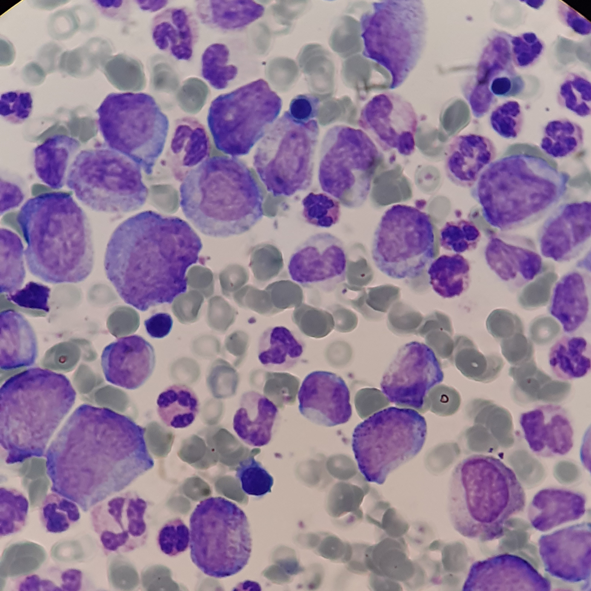

Información general sobre la leucemia
Imagen
Descripción
La leucemia es una enfermedad que afecta la sangre y la médula ósea, donde se producen las células sanguíneas. Se caracteriza por la producción anormal de glóbulos blancos, que pueden interferir con el funcionamiento normal del sistema inmunológico y otras células sanguíneas. Existen varios tipos de leucemia, como la leucemia linfocítica aguda (LLA), leucemia mieloide aguda (LMA), leucemia linfocítica crónica (LLC) y leucemia mieloide crónica (LMC).
Causas
- Alteraciones genéticas en las células madre de la médula ósea
- Exposición prolongada a radiación
- Contacto con ciertas sustancias químicas
- Tratamientos previos con algunos medicamentos
- Factores hereditarios o síndromes genéticos
Síntomas
Los síntomas pueden variar según el tipo de leucemia, pero comúnmente incluyen:
- Cansancio persistente
- Fiebre o sudoración nocturna
- Infecciones frecuentes
- Hematomas o sangrado fácil
- Pérdida de peso inexplicada
- Dolor en huesos o articulaciones
- Inflamación de ganglios linfáticos
Tratamiento
El tratamiento busca eliminar las células alteradas, restaurar la producción normal de sangre y prevenir recaídas:
- Quimioterapia: tratamiento principal para eliminar células anormales
- Radioterapia: en casos específicos o para preparar trasplantes
- Trasplante de médula ósea: reemplazo de células madre
- Medicamentos dirigidos: según el tipo de leucemia
- Inmunoterapia: estimula el sistema inmunológico